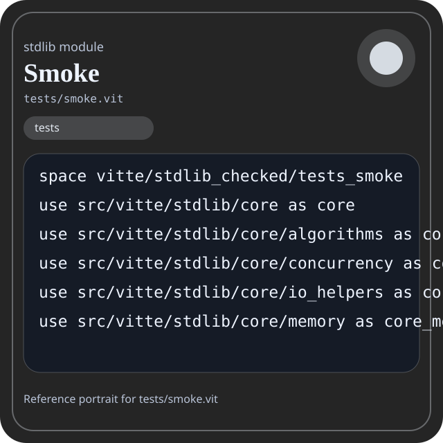

Stdlib module tests/smoke.vit
This page is a wiki-style reference for one concrete stdlib file. It explains what the file owns, where it fits in the family, and how to decide whether this is the right surface to depend on.

tests/smoke.vit.Family: tests
Kind: validation module
Page style: this reference follows the same “encyclopedic card + portrait + usage contract” logic as the keyword pages, but for stdlib modules.
Summary
- Overview
- Purpose
- Taxonomy
- Implementation profile
- Top-level API inventory
- Position in family
- Declaration map
- Representative signatures
- How to use this module
- User example
- Keyword coverage
- Source shape
- Source landmarks
- Source organization
- Complete API catalog
- Integration boundaries
- Composition guidance
- Relationship table
- Neighbor modules
Overview
| Field | Value |
|---|---|
| Path | tests/smoke.vit |
| Family | tests |
| Kind | validation module |
| Line count | 205 |
| Declared procedures | 9 |
| Declared forms/picks | 0 |
`tests/smoke.vit` is a validation module inside the `tests` family. It should be read as one focused slice of the broader family responsibility: Stdlib-focused smoke and integration validation surfaces.
Purpose
This file should be chosen because of responsibility, not because its name “sounds close enough”. Inside the tests family, it carries one focused part of the contract and keeps that responsibility separate from neighboring concerns.
- A smoke file should prove the library can still be loaded and exercised through its intended public paths.
Taxonomy
Think of this page as a generated encyclopedia entry rather than a hand-written tutorial. The goal is to show what kind of module this is, how dense it is, and what reading strategy makes sense before depending on it.
- Medium procedure surface: this file groups several related operations behind one namespace.
- Narrow dependency fan-in: a small set of imports suggests a focused collaboration surface.
- Validation-oriented module: expect example flows, smoke checks, or proof that other contracts remain stable.
Implementation profile
This profile is inferred directly from the source text. It does not replace reading the file, but it tells you quickly whether the module is mostly declarative, loop-heavy, branch-heavy, or organized around many small exits.
| Signal | Count | What it suggests |
|---|---|---|
if | 0 | Branching density and local decision-making. |
while | 0 | Loop-heavy or iterative implementation style. |
for | 0 | Collection-style traversal at source level. |
match | 0 | Variant-driven branching or grammar-style decoding. |
let | 0 | Local state and intermediate value density. |
give | 9 | Number of explicit exit points and result shaping. |
Top-level API inventory
| Surface | Items |
|---|---|
| Procedures | stdlib_smoke_core, stdlib_smoke_io, stdlib_smoke_compression, stdlib_smoke_async, stdlib_smoke_crypto, stdlib_smoke_json, stdlib_smoke_path, stdlib_smoke_system, stdlib_smoke_statistics |
| Forms | none declared at top level |
| Picks | none declared at top level |
| Constants | none declared at top level |
| Exports | none declared at top level |
Imported surfaces
src/vitte/stdlib/core as core use src/vitte/stdlib/core/algorithms as core_algorithms use src/vitte/stdlib/core/concurrency as core_concurrency use src/vitte/stdlib/core/io_helpers as core_io_helpers use src/vitte/stdlib/core/memory as core_memory use src/vitte/stdlib/core/panic as core_panic use src/vitte/stdlib/core/types as core_types use src/vitte/stdlib/core/utils as core_utils use src/vitte/stdlib/io as io use src/vitte/stdlib/io/buffer as io_buffer use src/vitte/stdlib/io/file as io_file use src/vitte/stdlib/io/fileops as io_fileops use src/vitte/stdlib/io/stdio as io_stdio use src/vitte/stdlib/io/stream as io_stream use src/vitte/stdlib/compression as compression use src/vitte/stdlib/compression/algorithms as compression_algorithms use src/vitte/stdlib/compression/brotli as compression_brotli use src/vitte/stdlib/compression/deflate as compression_deflate use src/vitte/stdlib/compression/huffman as compression_huffman use src/vitte/stdlib/compression/interface as compression_interface use src/vitte/stdlib/compression/lz as compression_lz use src/vitte/stdlib/compression/stats as compression_stats use src/vitte/stdlib/async as async_root use src/vitte/stdlib/async/channel as async_channel use src/vitte/stdlib/async/executor as async_executor use src/vitte/stdlib/async/future as async_future use src/vitte/stdlib/crypto as crypto use src/vitte/stdlib/crypto/hash as crypto_hash use src/vitte/stdlib/crypto/hmac as crypto_hmac use src/vitte/stdlib/crypto/keyderivation as crypto_keyderivation use src/vitte/stdlib/crypto/random as crypto_random use src/vitte/stdlib/crypto/utils as crypto_utils use src/vitte/stdlib/json as json use src/vitte/stdlib/json/builder as json_builder use src/vitte/stdlib/json/parse as json_parse use src/vitte/stdlib/json/parser as json_parser use src/vitte/stdlib/json/schema as json_schema use src/vitte/stdlib/json/serialize as json_serialize use src/vitte/stdlib/json/stringify as json_stringify use src/vitte/stdlib/json/types as json_types use src/vitte/stdlib/path as path use src/vitte/stdlib/path/globbing as path_globbing use src/vitte/stdlib/path/manipulation as path_manipulation use src/vitte/stdlib/path/special as path_special use src/vitte/stdlib/path/walker as path_walker use src/vitte/stdlib/strings as strings use src/vitte/stdlib/regex as regex use src/vitte/stdlib/runtime as runtime use src/vitte/stdlib/sysinfo as sysinfo use src/vitte/stdlib/datetime as datetime use src/vitte/stdlib/os as os use src/vitte/stdlib/memory as memory use src/vitte/stdlib/math as math use src/vitte/stdlib/math/algebra as math_algebra use src/vitte/stdlib/math/arithmetic as math_arithmetic use src/vitte/stdlib/math/arrays as math_arrays use src/vitte/stdlib/math/calculus as math_calculus use src/vitte/stdlib/math/comparison as math_comparison use src/vitte/stdlib/math/complex as math_complex use src/vitte/stdlib/math/geometry as math_geometry use src/vitte/stdlib/math/logic as math_logic use src/vitte/stdlib/math/matrix as math_matrix use src/vitte/stdlib/math/modular as math_modular use src/vitte/stdlib/math/number_theory as math_number_theory use src/vitte/stdlib/math/powers as math_powers use src/vitte/stdlib/math/probability as math_probability use src/vitte/stdlib/math/roots as math_roots use src/vitte/stdlib/math/sequences as math_sequences use src/vitte/stdlib/math/sort as math_sort use src/vitte/stdlib/math/statistics as math_statistics use src/vitte/stdlib/math/topology as math_topology use src/vitte/stdlib/math/trigonometry as math_trigonometry use src/vitte/stdlib/math/vector as math_vector use src/vitte/stdlib/statistics/descriptive as statistics_descriptive use src/vitte/stdlib/statistics/distributions as statistics_distributions use src/vitte/stdlib/statistics/datasets as statistics_datasets use src/vitte/stdlib/statistics/hypothesis as statistics_hypothesis use src/vitte/stdlib/statistics/machine_learning as statistics_machine_learning use src/vitte/stdlib/statistics/preprocessing as statistics_preprocessing use src/vitte/stdlib/statistics/sampling as statistics_sampling use src/vitte/stdlib/statistics as statistics_root use src/vitte/stdlib/statistics/time_series as statistics_time_series use src/vitte/stdlib/statistics/utils as statistics_utils use src/vitte/stdlib/statistics/visualization as statistics_visualization proc stdlib_smoke_core
Position in family
This file is module 1 of 1 in the tests family when ordered by path. By procedure count it ranks 1, and by line count it ranks 1. Those ranks are useful as rough signals of breadth, not as quality judgments.
Declaration map
The declaration map turns raw source into a scan-friendly catalog. It is useful when the file is large enough that a reader wants to orient by kinds of surfaces first.
| Line | Name | Kind | Role |
|---|---|---|---|
| 1 | vitte/stdlib_checked/tests_smoke | space | Declares the namespace that anchors this file in the stdlib tree. |
| 3 | src/vitte/stdlib/core as core | use | Imports a sibling or supporting surface used by the module. |
| 4 | src/vitte/stdlib/core/algorithms as core_algorithms | use | Imports a sibling or supporting surface used by the module. |
| 5 | src/vitte/stdlib/core/concurrency as core_concurrency | use | Imports a sibling or supporting surface used by the module. |
| 6 | src/vitte/stdlib/core/io_helpers as core_io_helpers | use | Imports a sibling or supporting surface used by the module. |
| 7 | src/vitte/stdlib/core/memory as core_memory | use | Imports a sibling or supporting surface used by the module. |
| 8 | src/vitte/stdlib/core/panic as core_panic | use | Imports a sibling or supporting surface used by the module. |
| 9 | src/vitte/stdlib/core/types as core_types | use | Imports a sibling or supporting surface used by the module. |
| 10 | src/vitte/stdlib/core/utils as core_utils | use | Imports a sibling or supporting surface used by the module. |
| 12 | src/vitte/stdlib/io as io | use | Imports a sibling or supporting surface used by the module. |
| 13 | src/vitte/stdlib/io/buffer as io_buffer | use | Imports a sibling or supporting surface used by the module. |
| 14 | src/vitte/stdlib/io/file as io_file | use | Imports a sibling or supporting surface used by the module. |
| 15 | src/vitte/stdlib/io/fileops as io_fileops | use | Imports a sibling or supporting surface used by the module. |
| 16 | src/vitte/stdlib/io/stdio as io_stdio | use | Imports a sibling or supporting surface used by the module. |
| 17 | src/vitte/stdlib/io/stream as io_stream | use | Imports a sibling or supporting surface used by the module. |
| 19 | src/vitte/stdlib/compression as compression | use | Imports a sibling or supporting surface used by the module. |
| 20 | src/vitte/stdlib/compression/algorithms as compression_algorithms | use | Imports a sibling or supporting surface used by the module. |
| 21 | src/vitte/stdlib/compression/brotli as compression_brotli | use | Imports a sibling or supporting surface used by the module. |
| 22 | src/vitte/stdlib/compression/deflate as compression_deflate | use | Imports a sibling or supporting surface used by the module. |
| 23 | src/vitte/stdlib/compression/huffman as compression_huffman | use | Imports a sibling or supporting surface used by the module. |
| 24 | src/vitte/stdlib/compression/interface as compression_interface | use | Imports a sibling or supporting surface used by the module. |
| 25 | src/vitte/stdlib/compression/lz as compression_lz | use | Imports a sibling or supporting surface used by the module. |
| 26 | src/vitte/stdlib/compression/stats as compression_stats | use | Imports a sibling or supporting surface used by the module. |
| 28 | src/vitte/stdlib/async as async_root | use | Imports a sibling or supporting surface used by the module. |
| 29 | src/vitte/stdlib/async/channel as async_channel | use | Imports a sibling or supporting surface used by the module. |
| 30 | src/vitte/stdlib/async/executor as async_executor | use | Imports a sibling or supporting surface used by the module. |
| 31 | src/vitte/stdlib/async/future as async_future | use | Imports a sibling or supporting surface used by the module. |
| 33 | src/vitte/stdlib/crypto as crypto | use | Imports a sibling or supporting surface used by the module. |
| 34 | src/vitte/stdlib/crypto/hash as crypto_hash | use | Imports a sibling or supporting surface used by the module. |
| 35 | src/vitte/stdlib/crypto/hmac as crypto_hmac | use | Imports a sibling or supporting surface used by the module. |
| 36 | src/vitte/stdlib/crypto/keyderivation as crypto_keyderivation | use | Imports a sibling or supporting surface used by the module. |
| 37 | src/vitte/stdlib/crypto/random as crypto_random | use | Imports a sibling or supporting surface used by the module. |
| 38 | src/vitte/stdlib/crypto/utils as crypto_utils | use | Imports a sibling or supporting surface used by the module. |
| 40 | src/vitte/stdlib/json as json | use | Imports a sibling or supporting surface used by the module. |
| 41 | src/vitte/stdlib/json/builder as json_builder | use | Imports a sibling or supporting surface used by the module. |
| 42 | src/vitte/stdlib/json/parse as json_parse | use | Imports a sibling or supporting surface used by the module. |
| 43 | src/vitte/stdlib/json/parser as json_parser | use | Imports a sibling or supporting surface used by the module. |
| 44 | src/vitte/stdlib/json/schema as json_schema | use | Imports a sibling or supporting surface used by the module. |
| 45 | src/vitte/stdlib/json/serialize as json_serialize | use | Imports a sibling or supporting surface used by the module. |
| 46 | src/vitte/stdlib/json/stringify as json_stringify | use | Imports a sibling or supporting surface used by the module. |
| 47 | src/vitte/stdlib/json/types as json_types | use | Imports a sibling or supporting surface used by the module. |
| 49 | src/vitte/stdlib/path as path | use | Imports a sibling or supporting surface used by the module. |
| 50 | src/vitte/stdlib/path/globbing as path_globbing | use | Imports a sibling or supporting surface used by the module. |
| 51 | src/vitte/stdlib/path/manipulation as path_manipulation | use | Imports a sibling or supporting surface used by the module. |
| 52 | src/vitte/stdlib/path/special as path_special | use | Imports a sibling or supporting surface used by the module. |
| 53 | src/vitte/stdlib/path/walker as path_walker | use | Imports a sibling or supporting surface used by the module. |
| 55 | src/vitte/stdlib/strings as strings | use | Imports a sibling or supporting surface used by the module. |
| 56 | src/vitte/stdlib/regex as regex | use | Imports a sibling or supporting surface used by the module. |
| 57 | src/vitte/stdlib/runtime as runtime | use | Imports a sibling or supporting surface used by the module. |
| 58 | src/vitte/stdlib/sysinfo as sysinfo | use | Imports a sibling or supporting surface used by the module. |
| 59 | src/vitte/stdlib/datetime as datetime | use | Imports a sibling or supporting surface used by the module. |
| 60 | src/vitte/stdlib/os as os | use | Imports a sibling or supporting surface used by the module. |
| 61 | src/vitte/stdlib/memory as memory | use | Imports a sibling or supporting surface used by the module. |
| 62 | src/vitte/stdlib/math as math | use | Imports a sibling or supporting surface used by the module. |
| 63 | src/vitte/stdlib/math/algebra as math_algebra | use | Imports a sibling or supporting surface used by the module. |
| 64 | src/vitte/stdlib/math/arithmetic as math_arithmetic | use | Imports a sibling or supporting surface used by the module. |
| 65 | src/vitte/stdlib/math/arrays as math_arrays | use | Imports a sibling or supporting surface used by the module. |
| 66 | src/vitte/stdlib/math/calculus as math_calculus | use | Imports a sibling or supporting surface used by the module. |
| 67 | src/vitte/stdlib/math/comparison as math_comparison | use | Imports a sibling or supporting surface used by the module. |
| 68 | src/vitte/stdlib/math/complex as math_complex | use | Imports a sibling or supporting surface used by the module. |
| 69 | src/vitte/stdlib/math/geometry as math_geometry | use | Imports a sibling or supporting surface used by the module. |
| 70 | src/vitte/stdlib/math/logic as math_logic | use | Imports a sibling or supporting surface used by the module. |
| 71 | src/vitte/stdlib/math/matrix as math_matrix | use | Imports a sibling or supporting surface used by the module. |
| 72 | src/vitte/stdlib/math/modular as math_modular | use | Imports a sibling or supporting surface used by the module. |
| 73 | src/vitte/stdlib/math/number_theory as math_number_theory | use | Imports a sibling or supporting surface used by the module. |
| 74 | src/vitte/stdlib/math/powers as math_powers | use | Imports a sibling or supporting surface used by the module. |
| 75 | src/vitte/stdlib/math/probability as math_probability | use | Imports a sibling or supporting surface used by the module. |
| 76 | src/vitte/stdlib/math/roots as math_roots | use | Imports a sibling or supporting surface used by the module. |
| 77 | src/vitte/stdlib/math/sequences as math_sequences | use | Imports a sibling or supporting surface used by the module. |
| 78 | src/vitte/stdlib/math/sort as math_sort | use | Imports a sibling or supporting surface used by the module. |
| 79 | src/vitte/stdlib/math/statistics as math_statistics | use | Imports a sibling or supporting surface used by the module. |
| 80 | src/vitte/stdlib/math/topology as math_topology | use | Imports a sibling or supporting surface used by the module. |
| 81 | src/vitte/stdlib/math/trigonometry as math_trigonometry | use | Imports a sibling or supporting surface used by the module. |
| 82 | src/vitte/stdlib/math/vector as math_vector | use | Imports a sibling or supporting surface used by the module. |
| 84 | src/vitte/stdlib/statistics/descriptive as statistics_descriptive | use | Imports a sibling or supporting surface used by the module. |
| 85 | src/vitte/stdlib/statistics/distributions as statistics_distributions | use | Imports a sibling or supporting surface used by the module. |
| 86 | src/vitte/stdlib/statistics/datasets as statistics_datasets | use | Imports a sibling or supporting surface used by the module. |
| 87 | src/vitte/stdlib/statistics/hypothesis as statistics_hypothesis | use | Imports a sibling or supporting surface used by the module. |
| 88 | src/vitte/stdlib/statistics/machine_learning as statistics_machine_learning | use | Imports a sibling or supporting surface used by the module. |
| 89 | src/vitte/stdlib/statistics/preprocessing as statistics_preprocessing | use | Imports a sibling or supporting surface used by the module. |
| 90 | src/vitte/stdlib/statistics/sampling as statistics_sampling | use | Imports a sibling or supporting surface used by the module. |
| 91 | src/vitte/stdlib/statistics as statistics_root | use | Imports a sibling or supporting surface used by the module. |
| 92 | src/vitte/stdlib/statistics/time_series as statistics_time_series | use | Imports a sibling or supporting surface used by the module. |
| 93 | src/vitte/stdlib/statistics/utils as statistics_utils | use | Imports a sibling or supporting surface used by the module. |
| 94 | src/vitte/stdlib/statistics/visualization as statistics_visualization | use | Imports a sibling or supporting surface used by the module. |
| 96 | stdlib_smoke_core | proc | Represents one top-level surface in the file contract and should be read as part of the module boundary. |
| 107 | stdlib_smoke_io | proc | Represents one top-level surface in the file contract and should be read as part of the module boundary. |
| 116 | stdlib_smoke_compression | proc | Represents one top-level surface in the file contract and should be read as part of the module boundary. |
| 127 | stdlib_smoke_async | proc | Represents one top-level surface in the file contract and should be read as part of the module boundary. |
| 134 | stdlib_smoke_crypto | proc | Represents one top-level surface in the file contract and should be read as part of the module boundary. |
| 143 | stdlib_smoke_json | proc | Represents one top-level surface in the file contract and should be read as part of the module boundary. |
| 154 | stdlib_smoke_path | proc | Owns path semantics, traversal, or normalization. |
| 162 | stdlib_smoke_system | proc | Represents one top-level surface in the file contract and should be read as part of the module boundary. |
| 193 | stdlib_smoke_statistics | proc | Represents one top-level surface in the file contract and should be read as part of the module boundary. |
The table is exhaustive for top-level declarations of the selected kinds. This file declares 94 matching surfaces.
Representative signatures
These signatures are shown in source order so the page keeps the feel of a reference manual, not just a keyword cloud.
proc stdlib_smoke_core() -> bool {(line 96)proc stdlib_smoke_io() -> bool {(line 107)proc stdlib_smoke_compression() -> bool {(line 116)proc stdlib_smoke_async() -> bool {(line 127)proc stdlib_smoke_crypto() -> bool {(line 134)proc stdlib_smoke_json() -> bool {(line 143)proc stdlib_smoke_path() -> bool {(line 154)proc stdlib_smoke_system() -> bool {(line 162)proc stdlib_smoke_statistics() -> bool {(line 193)
How to use this module
Start by reading the file as an ownership boundary. Ask three questions: what enters this module, what stable types or procedures it exports, and what adjacent module should stay outside of it.
- Read
spaceand top-level imports first so the ownership boundary oftests/smoke.vitis explicit. - Traverse procedures in source order; the early helpers usually explain the naming and numeric conventions used later.
- Only after that compare neighbor modules, because the right boundary choice matters more than memorizing one helper name.
User example
This example is generated from the actual stdlib module surface. Its job is not to be the smallest snippet possible; its job is to show a realistic consumer-shaped file that exercises the module and mirrors the language keywords the module itself relies on.
space demo/tests_smoke
use vitte/stdlib_checked/tests_smoke
proc run_example() -> bool {
let stdlib_smoke_core: bool = stdlib_smoke_core()
let stdlib_smoke_io: bool = stdlib_smoke_io()
let stdlib_smoke_compression: bool = stdlib_smoke_compression()
let stdlib_smoke_async: bool = stdlib_smoke_async()
let stdlib_smoke_crypto: bool = stdlib_smoke_crypto()
let stdlib_smoke_json: bool = stdlib_smoke_json()
let stdlib_smoke_path: bool = stdlib_smoke_path()
let stdlib_smoke_system: bool = stdlib_smoke_system()
let stdlib_smoke_statistics: bool = stdlib_smoke_statistics()
let family_count: f64 = 9 as f64
give stdlib_smoke_core and stdlib_smoke_io and stdlib_smoke_compression and stdlib_smoke_async and stdlib_smoke_crypto and stdlib_smoke_json and stdlib_smoke_path and stdlib_smoke_system and stdlib_smoke_statistics
}Keyword coverage
This table makes the “all keywords of the module” requirement auditable. It compares the detected Vitte keywords in the source file with the generated consumer example above.
| Keyword | Present in module source | Used in generated user example |
|---|---|---|
space | yes | yes |
use | yes | yes |
proc | yes | yes |
give | yes | yes |
and | yes | yes |
as | yes | yes |
The generated snippet exercises every detected Vitte keyword used by this module.
Source shape
space vitte/stdlib_checked/tests_smoke
use src/vitte/stdlib/core as core
use src/vitte/stdlib/core/algorithms as core_algorithms
use src/vitte/stdlib/core/concurrency as core_concurrency
use src/vitte/stdlib/core/io_helpers as core_io_helpers
use src/vitte/stdlib/core/memory as core_memory
use src/vitte/stdlib/core/panic as core_panic
use src/vitte/stdlib/core/types as core_types
use src/vitte/stdlib/core/utils as core_utils
use src/vitte/stdlib/io as ioThe excerpt is not meant to replace the file. It exists to make the module recognizable at first glance, the same way a Wikipedia infobox helps the reader orient before reading the whole article.
Source landmarks
Large files are easier to retain when they have visible landmarks. When the source contains explicit section banners, they are surfaced here; otherwise the first major declarations are used as anchors.
- Line 1:
space vitte/stdlib_checked/tests_smoke - Line 3:
use src/vitte/stdlib/core as core - Line 4:
use src/vitte/stdlib/core/algorithms as core_algorithms - Line 5:
use src/vitte/stdlib/core/concurrency as core_concurrency - Line 6:
use src/vitte/stdlib/core/io_helpers as core_io_helpers - Line 7:
use src/vitte/stdlib/core/memory as core_memory - Line 8:
use src/vitte/stdlib/core/panic as core_panic - Line 9:
use src/vitte/stdlib/core/types as core_types
Source organization
When a file carries its own internal chaptering, those chapters usually reveal the intended reading order better than a flat symbol list. This section reconstructs that organization from the source itself.
File surfaces
Top-level items: 94. Procedures: 9. Data surfaces: 0. Constants: 0.
First visible names: vitte/stdlib_checked/tests_smoke, src/vitte/stdlib/core as core, src/vitte/stdlib/core/algorithms as core_algorithms, src/vitte/stdlib/core/concurrency as core_concurrency, src/vitte/stdlib/core/io_helpers as core_io_helpers, src/vitte/stdlib/core/memory as core_memory, src/vitte/stdlib/core/panic as core_panic, src/vitte/stdlib/core/types as core_types, src/vitte/stdlib/core/utils as core_utils, src/vitte/stdlib/io as io
Complete API catalog
This catalog is the exhaustive file-level index for the module. It is intentionally closer to a generated encyclopedia appendix than to a tutorial summary.
Procedures
| Line | Name | Signature | Role |
|---|---|---|---|
| 96 | stdlib_smoke_core | proc stdlib_smoke_core() -> bool { | Represents one top-level surface in the file contract and should be read as part of the module boundary. |
| 107 | stdlib_smoke_io | proc stdlib_smoke_io() -> bool { | Represents one top-level surface in the file contract and should be read as part of the module boundary. |
| 116 | stdlib_smoke_compression | proc stdlib_smoke_compression() -> bool { | Represents one top-level surface in the file contract and should be read as part of the module boundary. |
| 127 | stdlib_smoke_async | proc stdlib_smoke_async() -> bool { | Represents one top-level surface in the file contract and should be read as part of the module boundary. |
| 134 | stdlib_smoke_crypto | proc stdlib_smoke_crypto() -> bool { | Represents one top-level surface in the file contract and should be read as part of the module boundary. |
| 143 | stdlib_smoke_json | proc stdlib_smoke_json() -> bool { | Represents one top-level surface in the file contract and should be read as part of the module boundary. |
| 154 | stdlib_smoke_path | proc stdlib_smoke_path() -> bool { | Owns path semantics, traversal, or normalization. |
| 162 | stdlib_smoke_system | proc stdlib_smoke_system() -> bool { | Represents one top-level surface in the file contract and should be read as part of the module boundary. |
| 193 | stdlib_smoke_statistics | proc stdlib_smoke_statistics() -> bool { | Represents one top-level surface in the file contract and should be read as part of the module boundary. |
Imports
| Line | Name | Signature | Role |
|---|---|---|---|
| 3 | src/vitte/stdlib/core as core | use src/vitte/stdlib/core as core | Imports a sibling or supporting surface used by the module. |
| 4 | src/vitte/stdlib/core/algorithms as core_algorithms | use src/vitte/stdlib/core/algorithms as core_algorithms | Imports a sibling or supporting surface used by the module. |
| 5 | src/vitte/stdlib/core/concurrency as core_concurrency | use src/vitte/stdlib/core/concurrency as core_concurrency | Imports a sibling or supporting surface used by the module. |
| 6 | src/vitte/stdlib/core/io_helpers as core_io_helpers | use src/vitte/stdlib/core/io_helpers as core_io_helpers | Imports a sibling or supporting surface used by the module. |
| 7 | src/vitte/stdlib/core/memory as core_memory | use src/vitte/stdlib/core/memory as core_memory | Imports a sibling or supporting surface used by the module. |
| 8 | src/vitte/stdlib/core/panic as core_panic | use src/vitte/stdlib/core/panic as core_panic | Imports a sibling or supporting surface used by the module. |
| 9 | src/vitte/stdlib/core/types as core_types | use src/vitte/stdlib/core/types as core_types | Imports a sibling or supporting surface used by the module. |
| 10 | src/vitte/stdlib/core/utils as core_utils | use src/vitte/stdlib/core/utils as core_utils | Imports a sibling or supporting surface used by the module. |
| 12 | src/vitte/stdlib/io as io | use src/vitte/stdlib/io as io | Imports a sibling or supporting surface used by the module. |
| 13 | src/vitte/stdlib/io/buffer as io_buffer | use src/vitte/stdlib/io/buffer as io_buffer | Imports a sibling or supporting surface used by the module. |
| 14 | src/vitte/stdlib/io/file as io_file | use src/vitte/stdlib/io/file as io_file | Imports a sibling or supporting surface used by the module. |
| 15 | src/vitte/stdlib/io/fileops as io_fileops | use src/vitte/stdlib/io/fileops as io_fileops | Imports a sibling or supporting surface used by the module. |
| 16 | src/vitte/stdlib/io/stdio as io_stdio | use src/vitte/stdlib/io/stdio as io_stdio | Imports a sibling or supporting surface used by the module. |
| 17 | src/vitte/stdlib/io/stream as io_stream | use src/vitte/stdlib/io/stream as io_stream | Imports a sibling or supporting surface used by the module. |
| 19 | src/vitte/stdlib/compression as compression | use src/vitte/stdlib/compression as compression | Imports a sibling or supporting surface used by the module. |
| 20 | src/vitte/stdlib/compression/algorithms as compression_algorithms | use src/vitte/stdlib/compression/algorithms as compression_algorithms | Imports a sibling or supporting surface used by the module. |
| 21 | src/vitte/stdlib/compression/brotli as compression_brotli | use src/vitte/stdlib/compression/brotli as compression_brotli | Imports a sibling or supporting surface used by the module. |
| 22 | src/vitte/stdlib/compression/deflate as compression_deflate | use src/vitte/stdlib/compression/deflate as compression_deflate | Imports a sibling or supporting surface used by the module. |
| 23 | src/vitte/stdlib/compression/huffman as compression_huffman | use src/vitte/stdlib/compression/huffman as compression_huffman | Imports a sibling or supporting surface used by the module. |
| 24 | src/vitte/stdlib/compression/interface as compression_interface | use src/vitte/stdlib/compression/interface as compression_interface | Imports a sibling or supporting surface used by the module. |
| 25 | src/vitte/stdlib/compression/lz as compression_lz | use src/vitte/stdlib/compression/lz as compression_lz | Imports a sibling or supporting surface used by the module. |
| 26 | src/vitte/stdlib/compression/stats as compression_stats | use src/vitte/stdlib/compression/stats as compression_stats | Imports a sibling or supporting surface used by the module. |
| 28 | src/vitte/stdlib/async as async_root | use src/vitte/stdlib/async as async_root | Imports a sibling or supporting surface used by the module. |
| 29 | src/vitte/stdlib/async/channel as async_channel | use src/vitte/stdlib/async/channel as async_channel | Imports a sibling or supporting surface used by the module. |
| 30 | src/vitte/stdlib/async/executor as async_executor | use src/vitte/stdlib/async/executor as async_executor | Imports a sibling or supporting surface used by the module. |
| 31 | src/vitte/stdlib/async/future as async_future | use src/vitte/stdlib/async/future as async_future | Imports a sibling or supporting surface used by the module. |
| 33 | src/vitte/stdlib/crypto as crypto | use src/vitte/stdlib/crypto as crypto | Imports a sibling or supporting surface used by the module. |
| 34 | src/vitte/stdlib/crypto/hash as crypto_hash | use src/vitte/stdlib/crypto/hash as crypto_hash | Imports a sibling or supporting surface used by the module. |
| 35 | src/vitte/stdlib/crypto/hmac as crypto_hmac | use src/vitte/stdlib/crypto/hmac as crypto_hmac | Imports a sibling or supporting surface used by the module. |
| 36 | src/vitte/stdlib/crypto/keyderivation as crypto_keyderivation | use src/vitte/stdlib/crypto/keyderivation as crypto_keyderivation | Imports a sibling or supporting surface used by the module. |
| 37 | src/vitte/stdlib/crypto/random as crypto_random | use src/vitte/stdlib/crypto/random as crypto_random | Imports a sibling or supporting surface used by the module. |
| 38 | src/vitte/stdlib/crypto/utils as crypto_utils | use src/vitte/stdlib/crypto/utils as crypto_utils | Imports a sibling or supporting surface used by the module. |
| 40 | src/vitte/stdlib/json as json | use src/vitte/stdlib/json as json | Imports a sibling or supporting surface used by the module. |
| 41 | src/vitte/stdlib/json/builder as json_builder | use src/vitte/stdlib/json/builder as json_builder | Imports a sibling or supporting surface used by the module. |
| 42 | src/vitte/stdlib/json/parse as json_parse | use src/vitte/stdlib/json/parse as json_parse | Imports a sibling or supporting surface used by the module. |
| 43 | src/vitte/stdlib/json/parser as json_parser | use src/vitte/stdlib/json/parser as json_parser | Imports a sibling or supporting surface used by the module. |
| 44 | src/vitte/stdlib/json/schema as json_schema | use src/vitte/stdlib/json/schema as json_schema | Imports a sibling or supporting surface used by the module. |
| 45 | src/vitte/stdlib/json/serialize as json_serialize | use src/vitte/stdlib/json/serialize as json_serialize | Imports a sibling or supporting surface used by the module. |
| 46 | src/vitte/stdlib/json/stringify as json_stringify | use src/vitte/stdlib/json/stringify as json_stringify | Imports a sibling or supporting surface used by the module. |
| 47 | src/vitte/stdlib/json/types as json_types | use src/vitte/stdlib/json/types as json_types | Imports a sibling or supporting surface used by the module. |
| 49 | src/vitte/stdlib/path as path | use src/vitte/stdlib/path as path | Imports a sibling or supporting surface used by the module. |
| 50 | src/vitte/stdlib/path/globbing as path_globbing | use src/vitte/stdlib/path/globbing as path_globbing | Imports a sibling or supporting surface used by the module. |
| 51 | src/vitte/stdlib/path/manipulation as path_manipulation | use src/vitte/stdlib/path/manipulation as path_manipulation | Imports a sibling or supporting surface used by the module. |
| 52 | src/vitte/stdlib/path/special as path_special | use src/vitte/stdlib/path/special as path_special | Imports a sibling or supporting surface used by the module. |
| 53 | src/vitte/stdlib/path/walker as path_walker | use src/vitte/stdlib/path/walker as path_walker | Imports a sibling or supporting surface used by the module. |
| 55 | src/vitte/stdlib/strings as strings | use src/vitte/stdlib/strings as strings | Imports a sibling or supporting surface used by the module. |
| 56 | src/vitte/stdlib/regex as regex | use src/vitte/stdlib/regex as regex | Imports a sibling or supporting surface used by the module. |
| 57 | src/vitte/stdlib/runtime as runtime | use src/vitte/stdlib/runtime as runtime | Imports a sibling or supporting surface used by the module. |
| 58 | src/vitte/stdlib/sysinfo as sysinfo | use src/vitte/stdlib/sysinfo as sysinfo | Imports a sibling or supporting surface used by the module. |
| 59 | src/vitte/stdlib/datetime as datetime | use src/vitte/stdlib/datetime as datetime | Imports a sibling or supporting surface used by the module. |
| 60 | src/vitte/stdlib/os as os | use src/vitte/stdlib/os as os | Imports a sibling or supporting surface used by the module. |
| 61 | src/vitte/stdlib/memory as memory | use src/vitte/stdlib/memory as memory | Imports a sibling or supporting surface used by the module. |
| 62 | src/vitte/stdlib/math as math | use src/vitte/stdlib/math as math | Imports a sibling or supporting surface used by the module. |
| 63 | src/vitte/stdlib/math/algebra as math_algebra | use src/vitte/stdlib/math/algebra as math_algebra | Imports a sibling or supporting surface used by the module. |
| 64 | src/vitte/stdlib/math/arithmetic as math_arithmetic | use src/vitte/stdlib/math/arithmetic as math_arithmetic | Imports a sibling or supporting surface used by the module. |
| 65 | src/vitte/stdlib/math/arrays as math_arrays | use src/vitte/stdlib/math/arrays as math_arrays | Imports a sibling or supporting surface used by the module. |
| 66 | src/vitte/stdlib/math/calculus as math_calculus | use src/vitte/stdlib/math/calculus as math_calculus | Imports a sibling or supporting surface used by the module. |
| 67 | src/vitte/stdlib/math/comparison as math_comparison | use src/vitte/stdlib/math/comparison as math_comparison | Imports a sibling or supporting surface used by the module. |
| 68 | src/vitte/stdlib/math/complex as math_complex | use src/vitte/stdlib/math/complex as math_complex | Imports a sibling or supporting surface used by the module. |
| 69 | src/vitte/stdlib/math/geometry as math_geometry | use src/vitte/stdlib/math/geometry as math_geometry | Imports a sibling or supporting surface used by the module. |
| 70 | src/vitte/stdlib/math/logic as math_logic | use src/vitte/stdlib/math/logic as math_logic | Imports a sibling or supporting surface used by the module. |
| 71 | src/vitte/stdlib/math/matrix as math_matrix | use src/vitte/stdlib/math/matrix as math_matrix | Imports a sibling or supporting surface used by the module. |
| 72 | src/vitte/stdlib/math/modular as math_modular | use src/vitte/stdlib/math/modular as math_modular | Imports a sibling or supporting surface used by the module. |
| 73 | src/vitte/stdlib/math/number_theory as math_number_theory | use src/vitte/stdlib/math/number_theory as math_number_theory | Imports a sibling or supporting surface used by the module. |
| 74 | src/vitte/stdlib/math/powers as math_powers | use src/vitte/stdlib/math/powers as math_powers | Imports a sibling or supporting surface used by the module. |
| 75 | src/vitte/stdlib/math/probability as math_probability | use src/vitte/stdlib/math/probability as math_probability | Imports a sibling or supporting surface used by the module. |
| 76 | src/vitte/stdlib/math/roots as math_roots | use src/vitte/stdlib/math/roots as math_roots | Imports a sibling or supporting surface used by the module. |
| 77 | src/vitte/stdlib/math/sequences as math_sequences | use src/vitte/stdlib/math/sequences as math_sequences | Imports a sibling or supporting surface used by the module. |
| 78 | src/vitte/stdlib/math/sort as math_sort | use src/vitte/stdlib/math/sort as math_sort | Imports a sibling or supporting surface used by the module. |
| 79 | src/vitte/stdlib/math/statistics as math_statistics | use src/vitte/stdlib/math/statistics as math_statistics | Imports a sibling or supporting surface used by the module. |
| 80 | src/vitte/stdlib/math/topology as math_topology | use src/vitte/stdlib/math/topology as math_topology | Imports a sibling or supporting surface used by the module. |
| 81 | src/vitte/stdlib/math/trigonometry as math_trigonometry | use src/vitte/stdlib/math/trigonometry as math_trigonometry | Imports a sibling or supporting surface used by the module. |
| 82 | src/vitte/stdlib/math/vector as math_vector | use src/vitte/stdlib/math/vector as math_vector | Imports a sibling or supporting surface used by the module. |
| 84 | src/vitte/stdlib/statistics/descriptive as statistics_descriptive | use src/vitte/stdlib/statistics/descriptive as statistics_descriptive | Imports a sibling or supporting surface used by the module. |
| 85 | src/vitte/stdlib/statistics/distributions as statistics_distributions | use src/vitte/stdlib/statistics/distributions as statistics_distributions | Imports a sibling or supporting surface used by the module. |
| 86 | src/vitte/stdlib/statistics/datasets as statistics_datasets | use src/vitte/stdlib/statistics/datasets as statistics_datasets | Imports a sibling or supporting surface used by the module. |
| 87 | src/vitte/stdlib/statistics/hypothesis as statistics_hypothesis | use src/vitte/stdlib/statistics/hypothesis as statistics_hypothesis | Imports a sibling or supporting surface used by the module. |
| 88 | src/vitte/stdlib/statistics/machine_learning as statistics_machine_learning | use src/vitte/stdlib/statistics/machine_learning as statistics_machine_learning | Imports a sibling or supporting surface used by the module. |
| 89 | src/vitte/stdlib/statistics/preprocessing as statistics_preprocessing | use src/vitte/stdlib/statistics/preprocessing as statistics_preprocessing | Imports a sibling or supporting surface used by the module. |
| 90 | src/vitte/stdlib/statistics/sampling as statistics_sampling | use src/vitte/stdlib/statistics/sampling as statistics_sampling | Imports a sibling or supporting surface used by the module. |
| 91 | src/vitte/stdlib/statistics as statistics_root | use src/vitte/stdlib/statistics as statistics_root | Imports a sibling or supporting surface used by the module. |
| 92 | src/vitte/stdlib/statistics/time_series as statistics_time_series | use src/vitte/stdlib/statistics/time_series as statistics_time_series | Imports a sibling or supporting surface used by the module. |
| 93 | src/vitte/stdlib/statistics/utils as statistics_utils | use src/vitte/stdlib/statistics/utils as statistics_utils | Imports a sibling or supporting surface used by the module. |
| 94 | src/vitte/stdlib/statistics/visualization as statistics_visualization | use src/vitte/stdlib/statistics/visualization as statistics_visualization | Imports a sibling or supporting surface used by the module. |
Integration boundaries
Within tests, this file should remain focused. If a future helper changes the host boundary, scheduling boundary, or data-shape boundary, it probably belongs in a neighbor module instead of being added here by convenience.
- Family responsibility: Stdlib-focused smoke and integration validation surfaces.
- Family architecture role: This family exists to prove that the documented stdlib surfaces keep behaving as promised.
Composition guidance
Choose this module when
- Choose
tests/smoke.vitwhen the main question is owned by this module rather than by transport, storage, orchestration, or user-interface code. - A smoke file should prove the library can still be loaded and exercised through its intended public paths.
Pause before extending it when
- Avoid extending this file when the new helper mostly changes the boundary to host I/O, runtime coordination, or foreign integration instead of staying inside
tests. - Do not move production logic into this file just because the test already mentions it; keep proof and implementation separate.
Relationship table
This table keeps the page closer to a real encyclopedia entry: a module is easier to understand when compared with its nearest alternatives in the same family.
| Neighbor | Procedures | Data surfaces | Why compare it |
|---|
Neighbor modules
- No close sibling module found in the same family bucket.